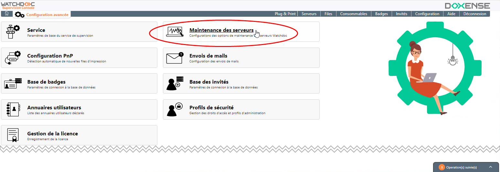
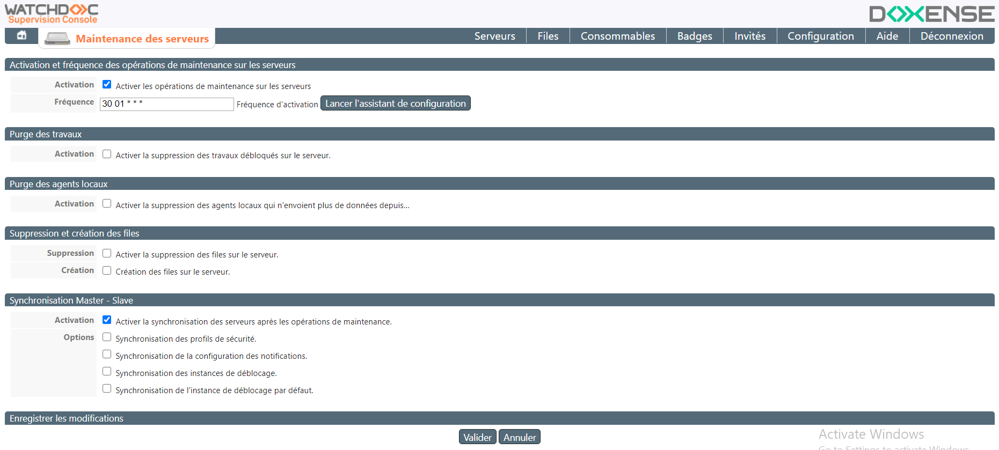
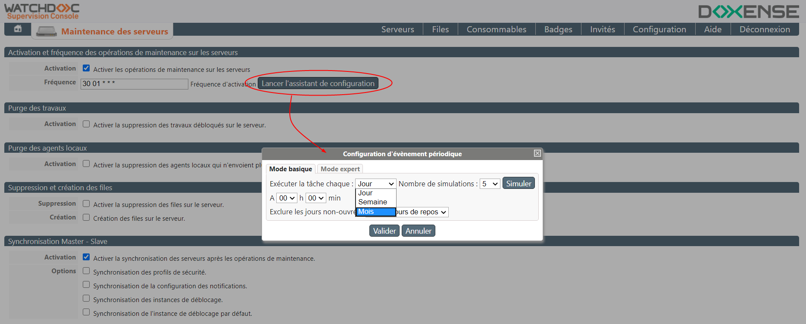
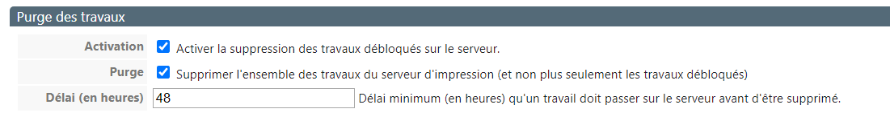
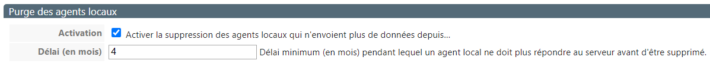
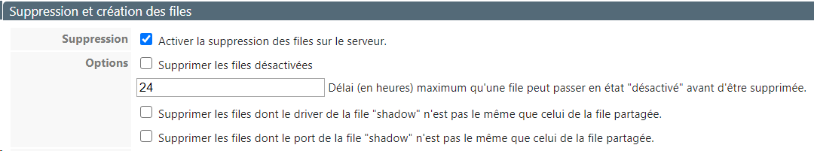
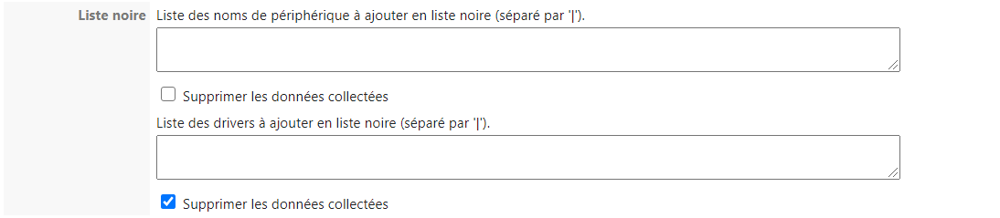
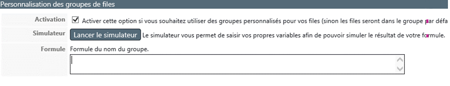
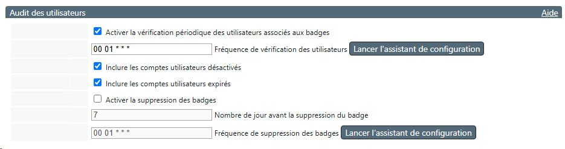

Principe
La Console de Supervision permet de gérer la maintenance des serveurs d'impression contrôlés par Watchdoc, ce qui est appréciable, notamment lorsque le parc est étendu.
Accéder à l'interface de supervision
-
Depuis le Menu principal de WSC, cliquez sur Configuration avancée ;
-
Dans l'interface Configuration avancée, cliquez sur Opérations de maintenance :

-
Vous accédez à l'interface Opérations de maintenance, dans laquelle s'affichent les sections de maintenance :

Configurer la maintenance
Activer et définir la fréquence de la maintenance
Les opérations de maintenance peuvent être programmées afin d'être lancées automatiquement en fonction d'une fréquence prédéfinie. Dans la section Activation et fréquence des opérations :
-
Activation : cochez cette case pour activer la maintenance automatique des serveurs ;
-
Fréquence : dans ce champ, indiquez (au format Crontab) la fréquence à laquelle vous souhaitez excécuter la maintenance.
-
Cliquez sur le bouton Lancer l'assistant de configuration pour être aidé dans la saisie de la tâche planifiée :

Activer la purge des travaux
En attendant leur déblocage par l'utilisateur, les travaux d'impression sont envoyés dans les spools File d'attente avant envoi au périphérique. Le mot 'spool' est, à l'origine, l'acronyme de 'simultaneous processing operations on line'.
Le spool d'impression désigne le fichier d'édition envoyé au périphérique d'impression. Il regroupe l'ensemble des ordres que l'imprimante doit exécuter pour mener à bien l'impression d'un ou plusieurs documents. (files d'attente) du serveur. Il peut être nécessaire de les gérer :
File d'attente avant envoi au périphérique. Le mot 'spool' est, à l'origine, l'acronyme de 'simultaneous processing operations on line'.
Le spool d'impression désigne le fichier d'édition envoyé au périphérique d'impression. Il regroupe l'ensemble des ordres que l'imprimante doit exécuter pour mener à bien l'impression d'un ou plusieurs documents. (files d'attente) du serveur. Il peut être nécessaire de les gérer :
-
Activation : cochez la case pour supprimer du serveur les spools correspondant aux travaux débloqués, mais qui n'ont pu être effectivement imprimés, en raison d'une défaillance quelconque (bourrage papier, panne du périphérique juste après le déblocage des travaux, etc.) ;
-
Purge : cochez la case pour supprimer du serveur les spools correspondant à tous les travaux d'impression, qu'ils aient été débloqués (et imprimés) ou qu'ils n'aient pas été débloqués, pour une raison ou une autre (oubli de l'utilisateur ou indisponibilité du périphérique d'impression) ;
-
Délai (en heures) : indiquez le délai, durant lequel un travail doit être conservé sur le serveur avant d'être supprimé par l'opération de purge décidée en maintenance. Ce délai permet de préserver les travaux qui auraient été lancés peu de temps avant le démarrage de la maintenance.

Activer la purge des agents locaux
L'Agent local Watchdoc est un utilitaire permettant de gérer les périphériques d'impression locaux (non connectés au réseau) connectés via USB ou adressés directement via IP aux postes de travail. L'Agent permet de suivre les usages du périphérique d'impression bien qu'il ne soit pas en réseau.
-
Activation : cochez cette case pour supprimer les agents locaux inactifs (au-delà d'un délai défini) encore installés sur les postes de travail ;
-
Délai : indiquez, en mois, le délai d'inactivité au-delà duquel cette purge doit être effectuée :

Supprimer et/ou créer des files
Les files d'impression contrôlées par Watchdoc peuvent être créées et supprimées unitairement dans l'interface d'administration de Watchdoc. Lorsque le nombre de files est important, il est possible de les créer ou de les supprimer en masse dans l'outil de maintenance.
Pour supprimer des files :
-
Activer la suppression : cochez la case pour supprimer toutes les files installées sur le serveur ;
-
Supprimer les files désactivées : cochez la case pour supprimer uniquement les files désactivées en précisant le délai au-delà duquel elles doivent être supprimées ;
-
Délai : indiquez, en heures, le délai au-delà duquel une file désactivée est supprimée.
-
Supprimer les files dont le driver n'est pas le même : cochez cette case pour supprimer les files dont le pilote est différent de celui de la file shadow ;
-
Supprimer les files dont le port "shadow" n'est pas le même : cochez cette case pour supprimer les files dont le port est différent de celui de la file shadow ;

Pour créer des files sur le serveur :
-
Création : cochez la case pour placer sous le contrôle de Watchoc® toutes les files situées sur le serveur ;
-
Options :
-
Associer le périphérique à une interface embarquée : cocher cette case pour que, lors de la création de la file, elle soit associée au WES (Watchdoc Embedded Solution) de la marque correspondante ;
-
Cacher le titre des documents dans l'historique des impressions : cochez cette case pour faire en sorte que les titres des documents soient transformés dans l'historique d'impression ;
-
-
Liste noire : vous pouvez constituer des listes de périphériques d'impression et de pilotes qui doivent être exclus des actions de suppression. Si plusieurs noms figurent dans ces listes, séparez-les par un pipe (|).
-
Supprimer les données collectées : cochez les cases si vous souhaitez supprimer du serveur les données (notamment statistiques) relatives au périphériques ou aux pilotes supprimés.

Personnaliser les groupes de files
Les groupes permettent de rassembler plusieurs files d'impression dans un ensemble répondant à un critère commun, de manière à en faciliter la supervision. Ce regroupement est propre à la Console de Supervision et outrepasse les groupes éventuellement paramétrés dans Watchdoc.
- Activer cette option : cochez la case pour faire en sorte d'utiliser le groupe WSC. Si l'option n'est pas cochées, ce sont les groupes Watchdoc qui seront appliqués ;
-
Simulateur : cliquez sur le bouton après avoir saisi votre formule dans le champ suivant pour voir le résultat obtenu ;
-
Formule : saisissez la formule permettant le regroupement des files.
Les variables possibles sont les suivantes :
-
$name (nom de la file)
-
$location (emplacement physique de la file)
-
$srvname (nom du serveur)
-
$mastersrvname (nom du serveur maître)
La chaîne peut comporter plusieurs opérateurs séparés par un point-virgule ";"
Chaque opération contient un opérateur qui peut être :
-
keep (conserver)
-
cut (couper)
-
split (séparer)
-
uppercase (mettre en majuscules)
-
lowercase (mettre en minuscules)
-
concat (concaténer)
-
delnumber (supprimer les chiffres)

-
Synchroniser les opérations sur tous les serveurs du domaine
Dans une configuration Master, la synchronisation permet de mettre à jour tous les serveurs associés :
-
Activer la synchronisation : cochez la case pour faire en sorte que les opérations de maintenance soient appliquées sur tous les serveurs du domaine (Master et slaves);
-
Options : cochez les cases permettant la synchronisation des différentes configurations listées. La configuration sera appliquée dès validation de la maintenance.
-
Enregistrer les modifications.
-
Cliquez sur le bouton pour enregistrer les paramètres de maintenance.
Gérer l'audit des utilisateurs pour la suppression des badges
L'interface Audit des utilisateurs permet de vérifier périodiquement le lien entre badges et utilisateurs. Ainsi, les badges associés à des comptes utilisateurs supprimés peuvent être détectés.
Il devient alors possible de supprimer ces badges de la base des badges utilisés, puis de les réattribuer ultérieurement à de nouveaux utilisateurs.
Pour activer l'audit des utilisateurs :
-
Activer la vérification : cochez la case pour activer l'opération d'audit. WSC vérifie alors que chaque badge enregistré dans la base des badges est toujours associés à un utilisateur.
-
Fréquence : dans ce champ, indiquez (au format Crontab) la fréquence à laquelle vous souhaitez excécuter la maintenance. Si nécessaire, cliquez sur le bouton Lancer l'assistant de configuration pour être aidé dans la saisie de la tâche planifiée ;
-
Inclure les comptes utilisateurs désactivés : cochez cette case pour prendre en compte les comptes utilisateurs désactivés ;
-
Inclure les comptes utilisateurs expirés : cochez cette case pour prendre en compte les comptes utilisateurs expirés ;
-
Activer la suppression des badges : cochez la case pour que WSC supprime les badges qui ne sont plus associés à un compte utilisateur :
